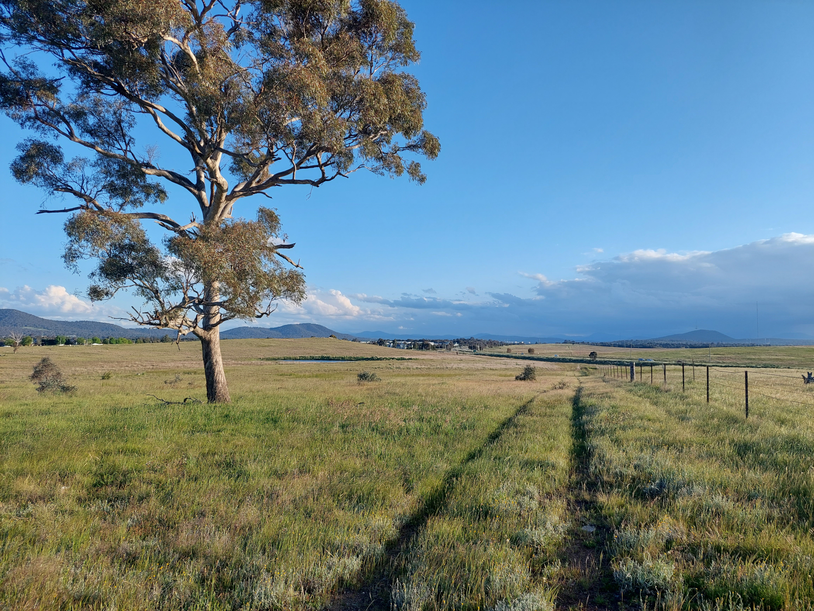

First I will test out my initial
HTML understanding by
adding a small JS project titled
Eye Of The Beholder. Here is my Artist Statement:
This is the Eye of The Beholder. To see colour, we determine the
reflected wavelengths of the light that falls into our eyes, here my
monster reflects that process by pulling the colours from its world to
see them. My monster is defined by its impact on the world, removing
colour, but without the destruction it cannot see. Is it erasure? The
shapes that the monster looks at remain, they are now tones of grey.
When I see art, I too alter it and change it, I make copies, share it,
it inspires me. This monster is art because it was to demonstrate that
the alteration of art by people or processes can also be art. I was
inspired by the Beholder a monster from the game
Dungeons and Dragons a being that can alter its reality with
its mind like my monster. The Obliteration Room, by
Yayoi Kusama, a place where the participants use colour to
create from a colourless space, also inspired me to explore the
opposite effect.
: Adding Some Structual Elements
This week I have been going through the
MDN HTML Tutoirals
to aid in my fundemental understanding of the structure of websites. I
wanted to start here instead of jumping directly into common web
frameworks so that I know what the elements of those frameworks are
doing under the hood.
: Adding Responsive Images
This week I am learning to add images using the
img,
picture,
srcset
and
svg
HTML elements. So Here I have added an image that will resize
depending on the browser.

I also added some CSS into
the document to try to make the nav bar and title more functional.
Adding An SVG
Today I added an SVG to the navigation bar in this website. This was to create a nice transition to the content of each page. I was introduced to the tool haihei which creates trasitional svgs for websites like this. I learned about this tool from the an excellent tutorial on adding curves to websites created by Jeff Delaney.
The colours on the website are a colour palette I created for the website using coolors. The website allows users to upload an image and then extract a colour palette from the colours in the image. I use the image of myself that is used in the front page of this website.
Finally I leaned about CSS layouts and used the flexbox layout to style the header above. This allows for the elements in the header to move depending on the width of the browser.